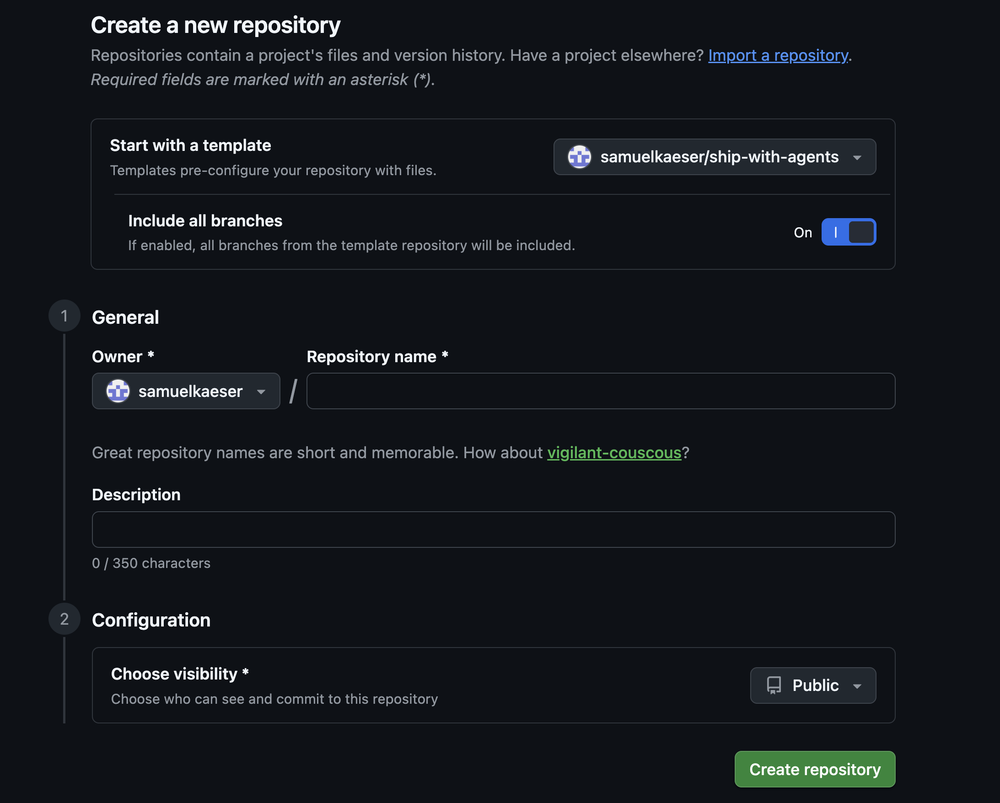
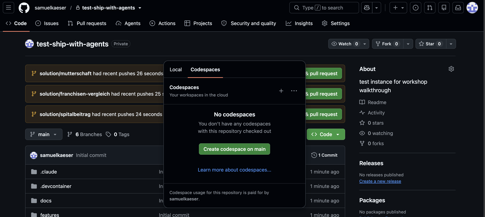

Grüner Button Use this template, dann Create a new repository (nicht "Open in a codespace")
3
Include all branches: Toggle auf On stellen
4
Repository name: ship-with-agents eintippen
5
Choose visibility: Private wählen
6
Create repository klicken
7
Im neuen Repo: grüner Button Code (rechts über der Dateiliste, nicht der Tab oben links), Tab Codespaces, Create codespace on main. Das dauert ein paar Minuten. Die gelben Hinweise "had recent pushes" ignorieren.
Im Codespace unten ins Terminal klicken, ./setup-key.sh tippen, Enter. Schlüssel einfügen, Enter (er bleibt unsichtbar, das ist normal). Es erscheint "Bereit."
10
claude tippen, Enter. Dann Sag Hallo in einem Satz. tippen, Enter. Der Agent antwortet.
11
Zweites Terminal mit dem + oben rechts im Terminal-Bereich öffnen, pnpm dev tippen, Enter. Tab Ports, Globe-Icon bei Port 3000. Die App zeigt eine Liste von Personen.
Vorlage-Repo
github.com/samuelkaeser/ship-with-agents
Schlüssel-Seite
key-page.samuelkaeser76.workers.dev

3
4
5
6
Raum-Passwort
am Abend gezeigt
eine Zeile, mit Bindestrichen

7
How to ship reliable software with AI agents
Dienstag, 17.11.2026, 17:00 bis 20:00
ipt, Löwenstrasse 32, Zürich
Samuel Käser · ipt
Samuel Käser
Consultant bei ipt
Baut Software für Kunden wie die Schweizer Bundesverwaltung
Nutzt diesen Ablauf jeden Tag auf Produktivcode
Unsere App heute: Krankenkasse light
Rechnet aus, was Versicherte selber zahlen
Franchise und Selbstbehalt, nach den Schweizer Regeln (KVG)
Beispiel: Rechnung CHF 5'000, Erika zahlt CHF 770
Den Rest, CHF 4'230, zahlt die Kasse
Was fehlt: der Spitalbeitrag
CHF 15 pro Spitaltag für Erwachsene. Die App kennt keine Spitaltage.
> Füge der App den Spitalbeitrag hinzu.
Derselbe Prompt, zwei Ordner: euer Repo heute und ein vorbereitetes Repo.
Was hat der Agent entschieden, bevor jemand gefragt wurde?
Tage von Hand
Anzahl pro Rechnung, kein Eintritts- oder Austrittsdatum
Nur Kinder befreit
Studierende und Mutterschaft weggelassen
Obendrauf
Zählt nicht zum Deckel von CHF 700
Neues Feld an der Rechnung
hospitalDays
Wer hätte das gleich entschieden?
Gleiches Modell, gleicher Prompt
Euer Repo heute
baut sofort
etwa 2 Minuten
9 Dateien in einer Änderung, Tests grün
Annahmen stehen am Schluss in der Antwort
Vorbereitetes Repo
schreibt keinen Code
fragt zuerst: Fragen mit Empfehlung
nach etwa 20 Sekunden
Darin: Regeln, Glossar, Befehle
Der Unterschied ist das Repo, nicht das Modell.
Zwei Gründe, warum es schiefgeht
A
Der Agent weiss nicht, was du willst.
Er füllt jede Lücke mit einer plausiblen Annahme und baut los.
B
Die Qualität sinkt, wenn sich das Context Window füllt.
Die Lösung ist ein Ablauf, kein besserer Prompt
Jeder Schritt endet mit einer Datei, die der nächste braucht.
Ihr entscheidet, der Agent baut, ihr prüft.
Setup-Check: bis jemand antwortet
9
Im Terminal ./setup-key.shSchlüssel einfügen, Enter. Es erscheint "Bereit."
10
claude, dann Sag Hallo in einem Satz.Der Agent antwortet
11
Zweites Terminal mit +: pnpm devTab Ports, Globe-Icon bei Port 3000
Schlüssel-Seite
URL
key-page.samuelkaeser76 .workers.dev
Raum-Passwort
am Abend gezeigt
Zu zweit: Driver tippt, Navigator liest mit. Wechsel in der Pause.
ZielEin Agent antwortet
Mit Agenten tippt ihr weniger Code und entscheidet mehr.
Entscheiden kann nur, wer das Fach des Kunden versteht.
Heute Abend ist euer Fach die Krankenkasse.
App und Karte: erst verstehen
Erika Beispiel, Franchise CHF 300, eine Rechnung
RechnungCHF 5'000.00
Franchise: zahlt sie selberCHF 300.00
Rest über der FranchiseCHF 4'700.00
Selbstbehalt: 10 % vom RestCHF 470.00
Patient zahlt (300 + 470)CHF 770.00
Kasse zahltCHF 4'230.00
Deckel: Der Selbstbehalt hört bei CHF 700 im Jahr auf, bei Kindern bei CHF 350.
Wer hat die 2500er Franchise?
Jetzt ihr, 12 Minuten
1
Karte wählenKarte = Datei in features/: ein Feature, das der App noch fehlt
2
Rechnung der Karte erfassenAbschnitt App und Karte
3
Den Agenten fragen. Noch nichts bauen.
> Erklär uns diese Karte und die Begriffe darin in fünf Sätzen. Noch nichts bauen.
ZielIch verstehe App und Karte
Grill, dann Spec
1
/grill-with-docsfeatures/<karte>.mdDer Agent fragt. Ihr antwortet, nicht nur "ja".
2
/to-specSpec lesen: stehen eure Antworten drin?
Statt nur "Ja" gibt es drei Antworten:
Warum? Was wäre die Alternative? Zeig ein Zahlenbeispiel.
Die vier Karten in features/
Spitalbeitrag
Mutterschaft
Medikamente 40%
Franchisen-Vergleich
Ihr entscheidet. Der Agent fragt.
Artefakt.scratch/<feature>/spec.md
Dünne Scheiben statt Schichten
Ticket 1: klein, Ende zu Ende, allein testbar?
Dann starten: /to-tickets.scratch/<feature>/spec.md Lest den Vorschlag mit dieser Frage im Kopf.
Artefakt.scratch/<feature>/issues/
Pause.
Danach: Driver wechseln.
10 Minuten
Festlegen, bauen, prüfen
1
Beispiele zuerst
Drei Beispiele mit dem richtigen Ergebnis aus eurer Spec, bevor der Agent baut
2
Ticket starten
/clear, dann /implement mit dem nächsten Ticket
3
Rot, dann grün
Beim ersten Ticket zuschauen. Ein Ticket dauert ein paar Minuten.
4
In der App prüfen
Nach jedem Commit euer Beispiel eingeben und vergleichen
Ziel: euer ganzes Feature
Ticket für Ticket: starten, prüfen, nächstes. Fertig? Zweite Karte, diesmal alleine.